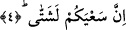

“Zeker ve ünsâ” kelimelerinin başındaki “lâm” harfleri hakîkat/gerçek anlamlarınadır.
İstiğrâk ifâde etmeleri de mümkündür. Bu takdirde erkek ve dişi ne varsa tümü
kasdedilmiş olur. Yani üreme yeteneği olan erkek ve dişi cinslerini yaratan kudreti
büyük Kâdir’e yemin ederim, demektir. Buna göre üreme yeteneği olmayan mesala
“katırlar” bu hükmün dışında kalırlar.
Denilmiştir ki: Allah ruhu olan mahlûkâttan erkek veya dişi olmayan bir varlık
yaratmamıştır. Erkekliği ve dişiliği belli olmayan “hünsâ”nın durumu bize göre belli
olmasa bile Allah katında belli, erkek mi dişi mi oldukları mâlumdur. Bir kimse ‘Bugün
herhangi bir erkeğe veya dişiye rastlamışsam karım benden boş olsun’ dese ve yemin
etse, bu kişi o gün bir “hünsâ-yı müşkil”e rastlamış olsa yeminini bozmuş ve karısını
boşamış olur. Çünkü her ne kadar bizim için belli olmasa da hünsâ aslında ya erkektir
ya da dişidir. Nitekim el-Keşşâf’ta bu şekilde geçmektedir.
Âyette geçen “erkek ve dişi”nin Âdem ve Havvâ olduğu da söylenmiştir. Bu durumda
kelimelerin başlarındaki “lâm” harfi ahd için olmuş olur. Nitekim Allah Teâlâ: “Ey
insanlar! doğrusu biz sizi bir erkekle, bir dişiden yarattık” (el-Hucurât, 49/13)
buyurmuştur.
İbn Mes’ûd (r.a.)’tan rivâyete göre o bu âyeti “
” şeklinde okuyordu.
Alkame der ki: Biz Şam’a vardık. Ebü’d-Derdâ (r.a.) yanımıza geldi. Bize “İçinizde
Abdullah b. Mes‘ûd’un kırâatını okuyan/bilen var mı?” diye sordu. Orada bulunanlar
beni işâret ettiler. Ben de “Evet, ben biliyorum.” dedim. Alkame: “O şu âyeti nasıl
okuyordu?” diye sordu. Ben de onun “
” diye okuduğunu işittim.” dedim.
Bunun üzerine Ebü’d-Derdâ şöyle dedi: “Evet, vallahi ben de Rasûlullah (s.a.)’i bu
şekilde okurken işittim. Ama şunlar benim bu âyeti “
” şeklinde okumamı
istiyorlar, ama ben onların bu isteklerine uyacak değilim.”
Âyette erkek olan rûha ve dişi olan nefse işâret vardır. Kalp bu ikisinin izdivacından
doğmuştur. Bazı âriflere göre gece erkek, gündüz ise dişidir. Nitekim bu konu en-Nâziât
sûresinde geçmişti.
4. İşleriniz başka başkadır.
Bu ifâde kasemin/yeminin cevabıdır.
“Sa’y” kelimesi toplama mânâsına masdardır. Bilindiği üzere herhangi bir kelimeye
muzâf olan masdar genellik ifâde eder. Genellik ifâde ettiği için haberi çoğul
yapılmıştır.
“Şettâ” kelimesi “şetît”in çoğulu olup dağınık, ayrı, başka demektir.
Mânâ ise şöyledir: Sizin çabalarınız yâni ezeli istidadınıza göre farklı amellerinizin